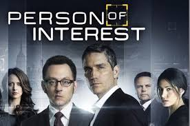

Favorite tv shows
Welcome!

person of interest
Former CIA agent Reese (Jim Caviezel) -- now presumed dead -- and billionaire software genius Finch (Michael Emerson) join forces as a vigilante crime-
fighting team. Using Finch's program, which employs pattern recognition to determine individuals who will soon be involved in violent crimes, they combine
Reese's covert-operations training and Finch's money and cyberskills to stop crimes before they happen. Former Army Intelligence Support Activity operative
Sameen Shaw joins the pair in their quest. .
.jpg)
Netflix takes on the infamous Medellín drug cartel in "Narcos," which follows the rise and fall of Colombian kingpin Pablo Escobar and the Drug Enforcement Agency agents hunting him. The story is told largely from the points of view of Escobar, played by Brazilian actor Wagner Moura, and U.S. DEA Agent Steve Murphy (Boyd Holbrook), on opposite sides of what would become an all-out war. The gritty drama begins with the early days of the drug battle, when the biggest offenders were "hippies in flip-flops" caught with up to a kilo of marijuana, continuing to the violent, bloody battles between members of the cartel peddling tons of kilos of cocaine and drug agents from Colombia, Mexico, and the U.S. -- a struggle estimated to have cost at least 4,000 lives over two decades. Pedro Pascal co-stars as Mexican DEA Agent Javier Peña
.jpg)
Tom Selleck stars as Frank Reagan, the New York Police Commissioner, and patriarch of the Reagan clan, a multigenerational family of cops. Frank's oldest son is Danny, a seasoned detective and Iraqi War veteran who occasionally uses dubious tactics to solve cases. Daughter Erin, the lone female, is an assistant district attorney. Fresh out of Harvard Law, Jamie is the youngest member and "golden boy" of the family. Jamie gave up a lucrative future in law to continue the family's tradition in police work, and is asked to participate in a secretive investigation that even his father does not know about.